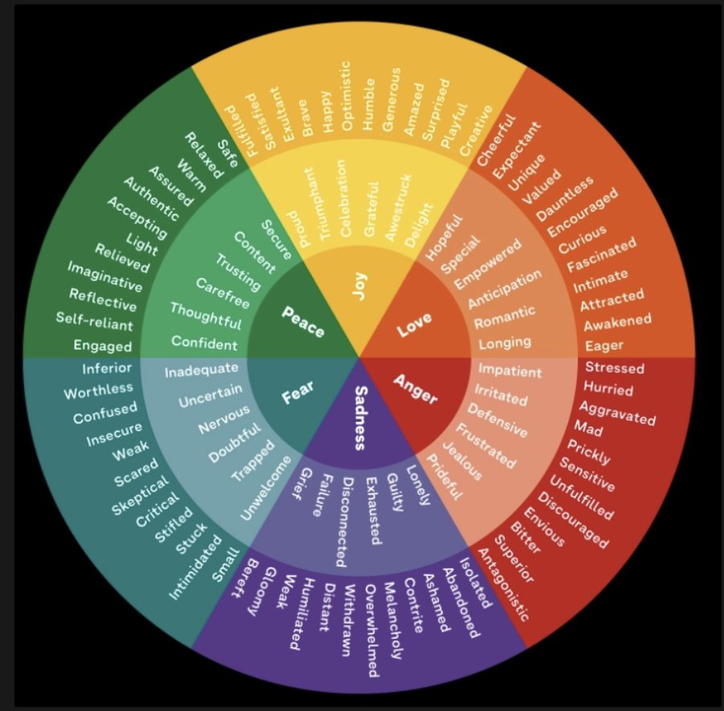

Tele-MANAS
National Tele Mental Health Programme offering free, confidential 24/7 support in over 20 languages across all Indian states and Union Territories.
Free, confidential, round-the-clock psychological support across India. Click to view verified national contacts.
National Tele Mental Health Programme offering free, confidential 24/7 support in over 20 languages across all Indian states and Union Territories.
24/7 mental health rehabilitation helpline launched by the Ministry of Social Justice and Empowerment, serving individuals across 13 Indian languages.
Round-the-clock free mental health crisis helpline offering compassionate, confidential emotional support and professional tele-counselling.
Confidential active listening, emotional de-escalation, and non-judgmental crisis support for individuals going through deep distress or feeling suicidal.
Naming what you feel with greater precision helps untangle overwhelm into actionable self-understanding.

Often when we feel overwhelmed, our emotions feel like a heavy, ambiguous cloud. We might say “I feel stressed”, “I’m angry”, or “I feel down”.
Underneath those surface labels often lie much more nuanced feelings: perhaps not just anger, but feeling dismissed, envious, or insecure; not just fear, but feeling trapped or inadequate; not just sadness, but feeling unwelcome or exhausted.
If you’re seeking a thoughtful, collaborative space to explore these patterns in depth, learn more about Prachiti’s lifespan counselling practice.